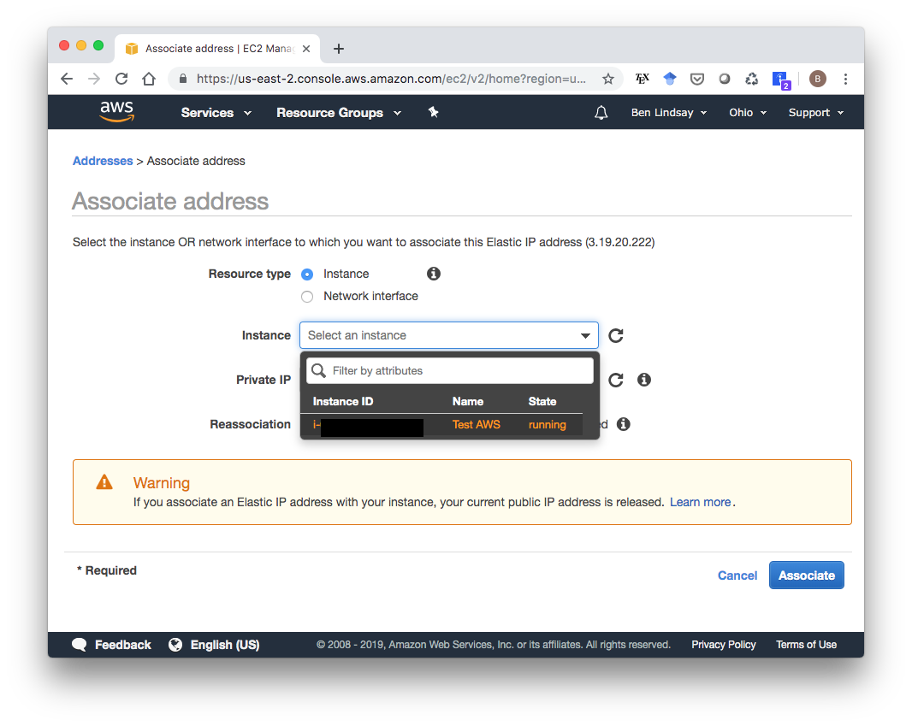
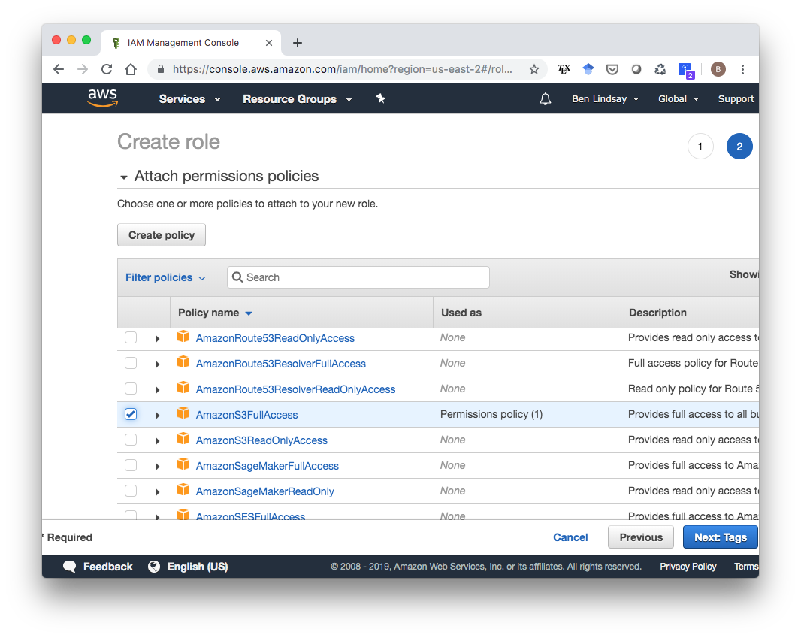
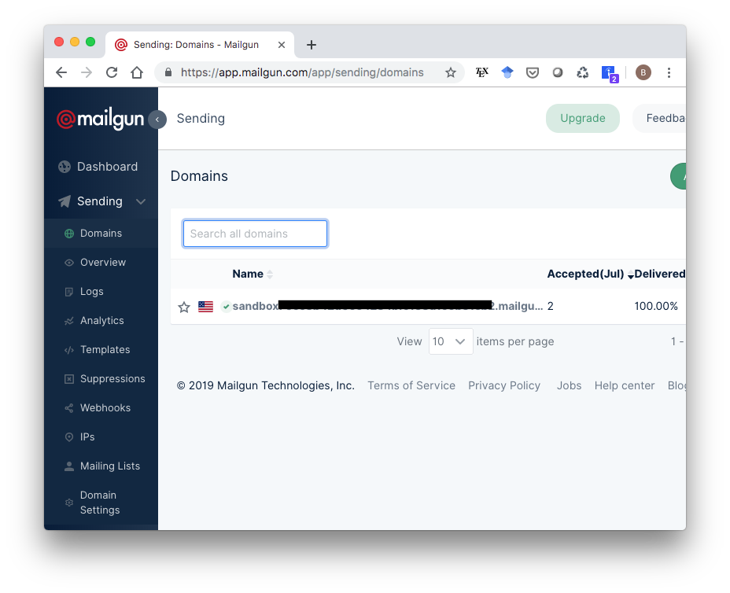

Deploying a Cookiecutter Django Site on AWS
The Django Cookiecutter template is an amazing tool to start up a Django project with all the bells and whistles ready to go. Getting your production site up and running can still be a bit of a hassle though, so to save myself, and hopefully a few others, from this hassle in the future, I’m recording all the steps that worked for me here. I’m sure there are other ways of doing this, and I’d love feedback on how to simplify the process.
Quick Note
Following these steps may incur some small charges on AWS even if you think you’re on the “Free Tier”. Keep an eye on your billing dashboard and terminate all EC2 instances and delete Elastic IPs once you’re done with them. For reference though, my billing forecast shows $1.38 for the month of July after tons of messing around on AWS. If you have some AWS Educate credits, or some of your credits from starting an account left over, you should be fine though. Also you can set up billing alerts to make sure you don’t get caught off-guard.
What you’ll get out of this
If you follow all these steps closely, by the end you will have an HTTPS enabled site with a custom domain name running via Docker on AWS EC2, backed by PostgreSQL, Redis, and Traefik. You’ll be able to create simple user profiles with email confirmations (with some caveats). And best of all, you won’t have spent a dime. This is all it will look like, but it’ll be ready for you to put it straight into production once you customize it.

1. Initialize EC2 Instance
Log in to your AWS Console (sign up for the Free Tier if you don’t have an account already). Click EC2 under services, and select your desired region from the menu near the top right of the page. I chose US East (Ohio) because that’s closest to my current location.
Click on Running Instances, then Launch Instance. This gives you a list of images you can pick from. I used the second one because it says it includes Python and Docker. Other images would probably work too.
In the launch wizard, the only thing you need to modify is the Security Group. Click on “6. Configure Security Group” at near the top of the screen, then click “Add Rule” to add HTTP, then do it again to add HTTPS. This is necessary to make your instance accessible as an HTTPS-enabled website.
With that, you’re set to launch. When you click launch, you’ll see a screen asking you to select or create a key pair. I’ll create a new one called “test-aws” and hit “Download Key Pair”. A good place to store the test-aws.pem file is in your ~/.ssh/ folder. Whatever you do, do not version control this file. You don’t want to accidentally push your private key to Github.
After downloading your key pair, make sure it has the correct permissions by running
chmod 600 ~/.ssh/test-aws.pemMake sure to use the path that points to your .pem file if you named it differently or stored it somewhere else. Now you can finally launch your EC2 instance with the “Launch Instances” button. Now you can go back to your EC2 Dashboard, click on “Running Instances” and see your freshly launched EC2 instance.
2. Get an Elastic IP Address
Your EC2 Dashboard shows you a lot of info about your EC2 instance, including your IPv4 Public IP. This address could change during the lifetime of your EC2 instance though, so you need to assign it an Elastic IP, which will remain attached to your instance as long as you want. To do this, select the Elastic IP service in your AWS Console and click “Allocate new address”.

You don’t have to change anything from the defaults. Going through that short wizard will give you a new Elastic IP address. In my case, it’s 3.19.20.222. Now that you have this IP Address, go to your Elastic IP Dashboard, select the new Elastic IP, click “Actions”, then “Associate address” to associate it with your running instance.
In the next screen, choose select your instance then click “Associate”.

3. Add IAM Role to EC2 Instance
The last modification you have to do to your EC2 instance is to add an IAM role to it to allow it to access S3 storage, which is where the static files will be stored. First, we need to create the IAM role. Go to the IAM service in your AWS Console (search “IAM” in the search box). You’ll see something that looks like this with a few default IAM roles already available. We’ll make a new one that only has an S3 Access policy, so click “Create role”.
Choose the EC2 service, then click “Next: Permissions”.
Scroll down to the AmazonS3FullAccess policy, select that, then click “Next: Tags”.

Skip to the next page, enter a name for this Role (I called it “S3Access”), and click “Create role”.
Now we need to attach this role to our EC2 instance. Go to the Running Instances section of your EC2 Dashboard. Select your instance, then click “Actions > Instance Settings > Attach/Replace IAM Role”.
Select your S3Access IAM role and attach it.
4. Create S3 Bucket
Now that our EC2 instance is all set up, we need to create an S3 bucket to store static files in. Go to the S3 service in your AWS Console and click “Create bucket”. In the wizard that pops up, make sure the Region is the same as your EC2 instance and pick a name for your bucket, then click “Next”.
You can stick with the default options in page 2 and click Next. On the “Set Permissions” page, you’ll need to uncheck all the boxes so it is publicly accessible.
Click “Next”, then create the bucket.
5. Get a Domain Name
To enable HTTPS using Let’s Encrypt (the default certificate authority in the Django Cookiecutter template), you’ll need a domain name. You can get a domain name for free (!) from freenom.com. I got testaws.ga. Whether you use Freenom or some other service, you need to create A records that associate the Elastic IP we reserved for our EC2 instance with this domain name. It should look something like this, where the “Target” for both records is our Elastic IP:
Be aware that it might take a day or two for your IP address change to actually go through so that your domain name actually points to the right place.
7. Modify Production Environment Variables
Before deploying to AWS, there are a couple production environment variables to add in. If you open up .envs/.production/.django, you’ll see a file with these lines in it:
# Email
# ------------------------------------------------------------------------------
MAILGUN_API_KEY=
DJANGO_SERVER_EMAIL=
MAILGUN_DOMAIN=
# AWS
# ------------------------------------------------------------------------------
DJANGO_AWS_ACCESS_KEY_ID=
DJANGO_AWS_SECRET_ACCESS_KEY=
DJANGO_AWS_STORAGE_BUCKET_NAME=At a minimum, you need to add the S3 bucket name to DJANGO_AWS_STORAGE_BUCKET_NAME. If you want to be able to have users create accounts on the site, you’ll need to add a MAILGUN_API_KEY and MAILGUN_DOMAIN as well. If you sign up for a free account at mailgun.com, you can follow the instructions here to get your API key. My variables now look something like this:
# Email
# ------------------------------------------------------------------------------
MAILGUN_API_KEY=XXXXXXXXXXXXXXXXXXXXXXXXXXXXXXXX-XXXXXXXX-XXXXXXXX
DJANGO_SERVER_EMAIL=
MAILGUN_DOMAIN=sandboxXXXXXXXXXXXXXXXXXXXXXXXXXXXXXXXX.mailgun.org
# AWS
# ------------------------------------------------------------------------------
DJANGO_AWS_ACCESS_KEY_ID=
DJANGO_AWS_SECRET_ACCESS_KEY=
DJANGO_AWS_STORAGE_BUCKET_NAME=test-aws-django-static8. Install and Start Docker on EC2 Instance
OK, time to actually start doing stuff on the EC2 instance. To ssh in, we need the hostname, which you can get from the Running Instances dashboard within the EC2 service. It should look something like ec2-WWW-XXX-YYY-ZZZ.us-east-2.compute.amazonaws.com, where WWW.XXX.YYY.ZZZ would be your public IP. To ssh into my instance, I run
ssh -i ~/.ssh/test-aws.pem ec2-user@ec2-3-19-20-222.us-east-2.compute.amazonaws.comNote: Your username is literally ec2-user, not something specific to you. It’s the same for everyone. Once you’re in, run a couple update/install commands:
sudo yum update -y
sudo yum install -y docker
sudo service docker start
sudo pip install docker-composeThis next one is a nice convenience command to make it so we don’t have to type sudo in front of all our docker commands.
sudo usermod -aG docker ec2-userMake sure it’s working by typing docker ps which should give you this output:
[ec2-user@ip-XXX-XXX-XXX-XXX ~]$ docker ps
CONTAINER ID IMAGE COMMAND CREATED STATUS PORTS NAMES9. Copy Files to EC2 Instance
Open a new terminal window, and make sure you’re in your project’s top-level directory, i.e.
cd /path/to/test_django_on_awsThen run this command with the right path to your .pem file and DNS:
rsync -av -e "ssh -i /path/to/your.pem" . ec2-user@ec2-WWW-XXX-YYY-ZZZ.REGION.compute.amazonaws.com:~/app/Now in your terminal that’s ssh’ed into AWS, you should be able to
cd ~/appand see all of your files copied there.
10. Build and Deploy
Finally, it’s time. Within your app directory on your EC2 instance, run the following two commands:
docker-compose -f production.yml build
docker-compose -f production.yml up -dThe build command will take a while, but the up command will be pretty fast. Now if all goes well, you should be able to navigate to your domain name in a browser (testaws.ga in my case) and see a screen like the very first screenshot in this blog post. If you don’t see it, keep calm and go to the next section. If you do, congratulations! The universe smiles kindly on you. Go purchase a lottery ticket, then skip to section 12 and read on about accessing the admin section and creating user profiles.
11. It didn’t work. Now what?
There are so many moving parts that it’s pretty unlikely this will have worked perfectly the first time through. Getting to the point where I could write this post was a study in masochism, plowing through problem after problem until I finally got the web page to render. I’ll go through some of the problems I ran into and how I fixed them to give you some ideas about what to do next.
The domain might need some time to point to the right IP address. It can take up to a day or two. When Chrome couldn’t connect to the webpage, I opened a terminal and typed
ping testaws.gawhich responded with
PING testaws.ga (3.17.199.231): 56 data bytes Request timeout for icmp_seq 0 Request timeout for icmp_seq 1I had previously pointed
testaws.gaat3.17.199.231, so I double-checked to make sure I had it pointed at my new Elastic IP,3.19.20.222and…waited.pingkept showing the old IP for about an hour, so I let it sit overnight, and in the morning it pointed to the right one. Don’t worry if you getRequest timeouts though. I get those and the site seems to be working fine.Check the logs. Once I got to the point of running the
docker-composecommands on the EC2 instance, checking the logs was crucial to debugging my problems. That (plus a fancy new website called Google.com) is how I found out that Let’s Encrypt doesn’t work without a domain name, how I found out I needed to point to an S3 bucket. The way you check them is to rundocker-compose -f production.yml logswithin the
appdirectory of your EC2 instance. You’ll get a long printout of feedback fromtraefik,django,postgres, andredis. The main errors I ran into weretraefiksaying something likeunable to generate a certificate for the domains [mydomain.blah]or a python stacktrace from
djangoinvolvingboto3, telling me there was a problem with S3. If S3 is working, you should see a folder calledstaticin your S3 bucket in the AWS Console.
12. Admin Dashboard
The admin tool is a nice feature of Django, so let’s get that working. While sshed into your EC2 instance and in the app directory, first type
docker-compose -f production.yml run --rm django python manage.py migrateto run migrations that will make the admin panel available, then create a superuser with
docker-compose -f production.yml run --rm django python manage.py createsuperuserThe Django Cookiecutter template is very security-conscious, so it generated a random string as the URL for your admin page. Go to .envs/.production/.django and find the line that looks like
DJANGO_ADMIN_URL=XXXXXXXXXXXXXXXXXXXXXXXXXXXXXXXX/Copy that string and navigate to yourdomain.name/XXXXXXXXXXXXXXXXXXXXXXXXXXXXXX/, and it should give you a login screen. Log in with the username and password you just created, and you should see this admin page:
13. Create User Profiles
Before we try making a user profile, note that the free version of Mailgun only lets you send emails to addresses you have specified in your account. So to test this, you’ll need to go to app.mailgun.com/app/sending/domains and select your sandbox domain…

…then add whatever emails you want to the list of authorized recipients.
Mailgun will send a confirmation email to whatever addresses you list. Once you add and confirm an address, you can test out user profile creation on your Django site with that address. Django will send that a confirmation email to that address. For me, that email showed up in Spam at first, so check there if you don’t see it.
14. Conclusion
I hope this post helps someone out there, especially future me. AWS can be a pain in the @$$ so hopefully having some detailed steps will make it just a little less painful. Happy coding, and I’d love to hear any feedback below or on the Twitters.